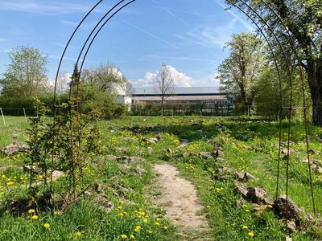
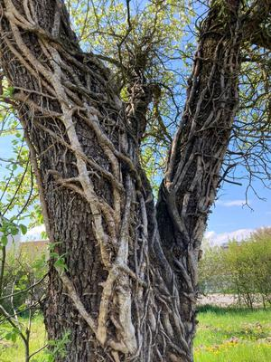

Im Steinlabyrinth
Plötzlich neben Sportplätzen und Lagerhallen ein kleiner Pfad. Das Hinweischild sagt "Labyrinth". Ich gehe am Ende des Pfades durch einen Rosenbogen ohne Rosen. Ein verwunschener Ort öffnet sich.
Vor mir ein Meer aus Gelb, Weiß, Grün. Löwenzahn, Apfelblüten, Gras. In der Stille Insektensurren. Pferdewiehern.
{kind=link}

Eingang zum Steinlabyrinth mit Blick auf blühenden Löwenzahn
Ein Trampelpfad zwischen kleinen Steinwällen. Ich hole tief Luft und lasse mich ein. Langsam gehe ich den Pfad. Sehe kleine Schönheiten am Weg. Eine Biene auf einer Löwenzahnblüte.

Biene auf Löwenzahnblüte
Kleine blaue Blüten. Ich höre die Pferde das Gras abfressen und kauen als ich an ihnen vorbeikomme.
In Windungen geht der Pfad. Wie das Leben, es läuft nichts geradeaus. Da ich vor mich auf den Weg schaue, habe ich keinen Überblick. Ich komme von Ecke zu Ecke. Halte Inne.
Plötzlich platzt das Leben mitten hinein. Zwei Jungs springen aufgeregt plappernd unbeschwert quer über die Steine zu einem Baum.
{kind=link}

Alter Baum im Zentrum
„Hier ist es“ ruft der eine, “Aber leer“. Enttäuschung. Ich frage sie ob sie Geocashing machen und wünsche ihnen Glück bei der weiteren Suche. Dann bin ich wieder alleine mit meinen Gedanken und dem Summen.
Zwischendurch frage ich mich, ob der Weg wirklich zur Mitte und wieder hinaus führt oder ob ich flux über eine Mauer steigen soll. Nein, ich bleibe auf dem Weg und vertraue darauf, dass er mich richtig führt. Vielleicht sollte ich wirklich öfters auf den Weg vertrauen.
Auf einmal bin ich in der Mitte angekommen. Der Weg führt mich einmal im Kreis und dann laufe ich den gleichen Weg rückwärts. Ich bin doch hier gerade her gekommen und doch sieht es plötzlich anders aus. Manchmal bringt ein Richtungswechsel neue Perspektiven. Am einem Baum angekommen schaue ich nach oben. Da blitzt es kurz rot auf. Ein leuchtendes Kunsstoffkreuz dreht sich zwischen den Zweigen.
Ich komme wieder an den Ausgang. In mir klingt etwas nach. Es war doch nur ein Trampelpfad zwischen Steinen und doch war es ein besonderer Ort.
Wenn es morgen früh nicht regnet komme ich noch einmal her.
Später auf meinem Zimmer lese ich nach. Das Steinlabyrinth ist in Anlehnung an das Labyrinth der Kathedrale von Reims entworfen worden. Und wurde 2007 an nur einem Wochenende in einer Jugendaktion mit gespendeten Materialien erbaut.
Das Staunen klingt nach.
Kommentare